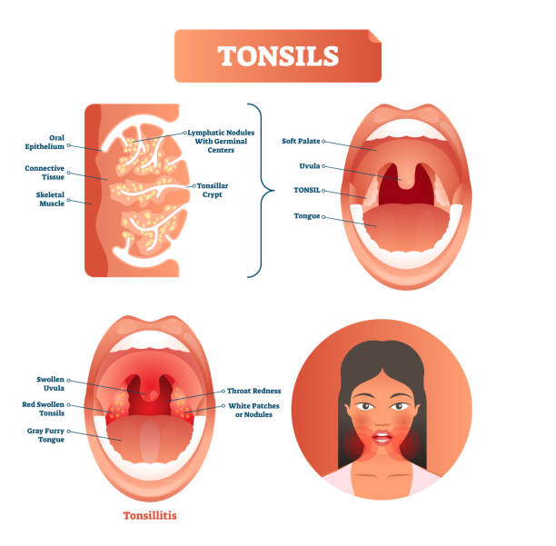

Tonsils and Tonsil Surgery
Tonsil problems
- Enlarged tonsils (tonsillar hypertrophy)
- Tonsillitis: acute, chronic and recurrent
- Tonsil stones
- Peritonsillar abscess (quinsy)
Types of tonsil surgery
- Extracapsular (total) tonsillectomy: the whole tonsil and its capsule are removed, by dissection, electrocautery, coblation, LigaSure or harmonic scalpel
- Intracapsular tonsillectomy: most of the tonsil is removed with coblation or a microdebrider, while the capsule is preserved
- Tonsillotomy: partial reduction of the tonsil
Which tonsil surgery is best?
It depends on the patient's age and the disease:
- For recurrent tonsillitis, extracapsular tonsillectomy is usually better.
- For snoring and sleep apnoea, intracapsular surgery is usually preferred.
- With adenoidectomy, tonsils may be reduced to prevent them blocking the airway later.
Recovery and risks
| Extracapsular | Intracapsular | |
|---|---|---|
| Healing | The raw muscle and vessels heal over 2–3 weeks | The capsule protects the muscle underneath |
| Pain | More pain | Least pain |
| Bleeding | Can occur in the first 24 hours, or between days 7 and 10 due to infection of the healing area, sometimes needing admission | Low risk of significant bleeding |
| Hospital stay | Usually overnight | Usually day care |
| Back to normal activities | About 2 weeks | 3–5 days |
| Later | No tonsil tissue remains | Remaining tonsil tissue can occasionally regrow or get infected |
Book a consultation
Call 81390 05150 or message on WhatsApp. See clinics and timings.